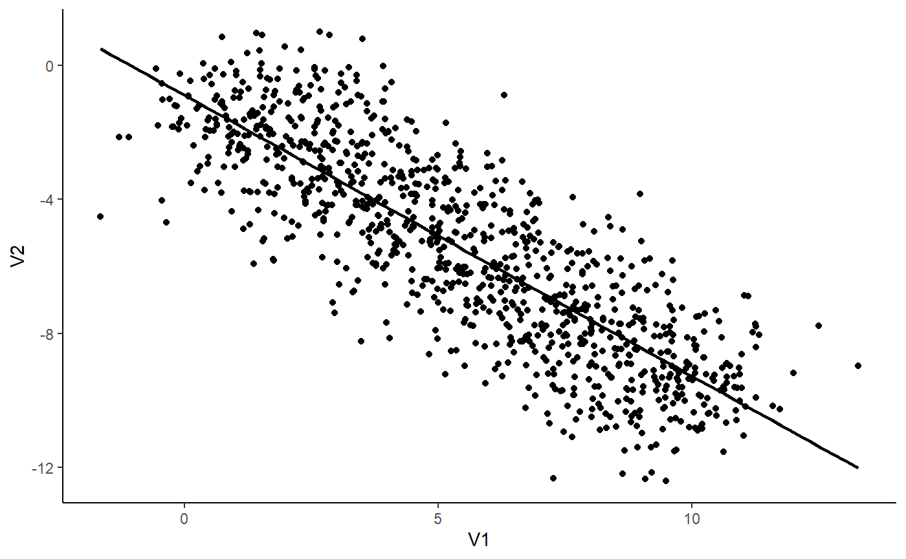
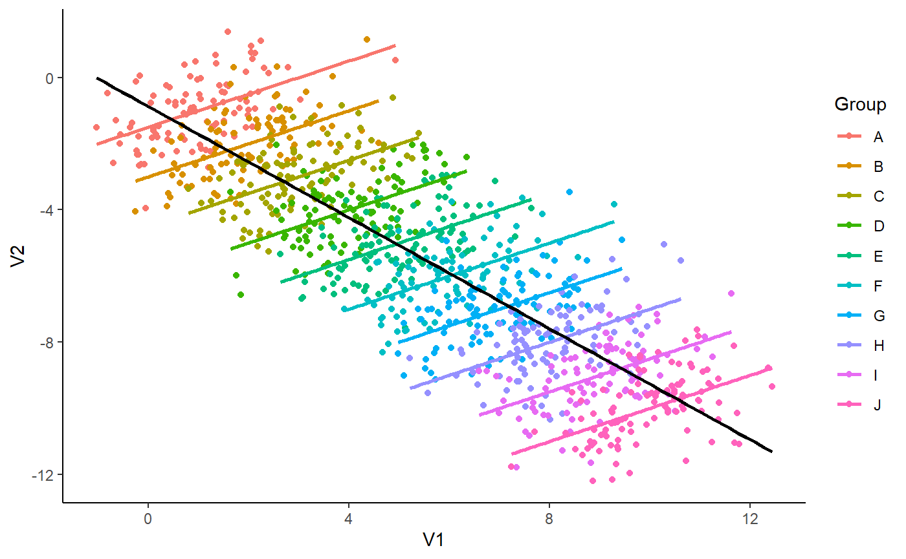

multilevel.RmdImagine we have an experiment in which 10 individuals completed a task with 100 trials. For each of the 1000 total trials, we measured two things, V1 and V2, and our research aims at investingating the link between these two variables.
We will generate data using the simulate_simpson() function from the correlation package.
Now let’s visualize the two variables:
library(ggplot2)
ggplot(data, aes(x=V1, y=V2)) +
geom_point() +
geom_smooth(colour="black", method="lm", se=FALSE) +
theme_classic()
That seems pretty straightfoward! It seems like there is a negative correlation between V1 and V2. Let’s test this.
## Parameter1 | Parameter2 | r | 95% CI | t | df | p | Method | n_Obs
## ------------------------------------------------------------------------------------------
## V1 | V2 | -0.84 | [-0.86, -0.82] | -48.77 | 998 | < .001 | Pearson | 1000Indeed, there is strong, negative and significant correlation between V1 and V2. Great, can we go ahead and publish these results in PNAS?
Hold on sunshine! Ever heard of something called the Simpson’s Paradox?
Let’s colour our datapoints by group (by individuals):
library(ggplot2)
ggplot(data, aes(x=V1, y=V2)) +
geom_point(aes(colour=Group)) +
geom_smooth(aes(colour=Group), method="lm", se=FALSE) +
geom_smooth(colour="black", method="lm", se=FALSE) +
theme_classic()
Mmh, interesting. It seems like, for each subject, the relationship is different. The negative general trend seems to be created by differences between the groups and could be spurious!
Multilevel (as in multi-group) correlations allow us to account for differences between groups. It is based on a partialization of the group, entered as a random effect in a mixed linear regression.
You can compute them with the correlations package by setting the multilevel arguent to TRUE.
## Parameter1 | Parameter2 | r | t | df | p | CI | Method
## ------------------------------------------------------------------------------
## V1 | V2 | 0.50 | 18.23 | 998 | < .001 | [0.45, 0.55] | PearsonDayum! We were too hasty in our conclusions! Taking the group into account seems to be super important.
Note: In this simple case where only two variables are of interest, it would be best to proceed using a mixed regression model instead of correlations. That being said, the latter can be useful for exploratory analysis, when multiple variables are of interest, or in combination with a network or structural approach.